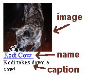

|
|
Table Of Contents
- Exécution basique
- Options
- Thèmes
- Sous-albums
- Eviter la regénération des vignettes
- Nettoyer les vignettes
- Taille d'images moyenne
- Légendes
- Légendes EXIF
- En-têtes et pieds-de-page
- Masquer des Fichiers / des Répertoires
- Recadrer les images
- Film vidéo
- Graver des CDs (en utilisant file://)
- Indexer entièrement votre album
- Mettre à jour des albums avec CGI
- Traduit par:
1: Exécution basique
Créez un répertoire contenant uniquement des images. Le script album et
les autres outils ne doivent pas se trouver dans ce répertoire. Lancez
la commande album en précisant ce répertoire :
% album /exemple/chemin/vers/les/images
Ou, si vous êtes déjà dans le répertoire exemple/chemin/vers/les/images :
% album images/
Quand l'opération est terminée, vous aurez un album photo à l'intérieur
de ce répertoire avec comme fichier d'entrée index.html.
Si ce chemin fait partie de votre serveur web, alors vous pourrez
visualiser votre album photos à partir de votre navigateur. Si vous
ne le trouvez pas, contactez votre administrateur système.
2: Options
Il y a trois types d'options: options booléennes (vrai / faux), options
acceptant des chaînes de caractères ou des numéros et options acceptant
plusieurs arguments. Les options booléennes peuvent être désactivées en
les préfixant avec -no_ :
% album -no_image_pages
Les chaînes de caractères et les nombres sont entrés après une option :
% album -type gif
% album -columns 5
Les options acceptant plusieurs arguments peuvent être utilisées de
deux manières. La première avec un argument à la fois :
% album -exif hi -exif there
ou avec plusieurs arguments en utilisant la syntaxe '--' :
% album --exif hi there --
Vous pouvez supprimer une valeur particulière d'une option à plusieurs
arguments avec -no_<option> suivi du nom de l'argument et effacer
tous les arguments d'une telle option avec -clear_<option>.
Pour effacer tous les arguments d'une option acceptant plusieurs arguments
(provenant par exemple d'une précédente utilisation de la commande album) :
% album -clear_exif -exif "new exif"
(l'option -clear_exif effacera les anciens arguments de l'option exif puis
l'option -exif suivante permettra d'ajouter un nouveau commentaire dans
la section exif).
Et pour terminer, vous pouvez supprimer un argument particulier d'une option
à plusieurs arguments avec 'no_' :
% album -no_exif hi
supprimera la valeur 'hi' et laissera intacte la valeur 'there' de l'option
exif.
Voir également la section sur Sauvegarde des options.
3: Thèmes
Les thèmes sont une composante essentielle qui rend album attrayant. Vous
pouvez particulariser le look de votre album photo en téléchargeant un
thème depuis le site MarginalHacks ou même écrire votre propre thème en
phase avec votre site web.
Pour utiliser un thème, téléchargez l'archive correspondante du thème au
format .tar ou .zip et installez-là.
Les thèmes sont spécifiés grâce à l'option -theme_path qui permet d'indiquer
les endroits où sont stockées les thèmes. Ces chemins sont nécessairement
quelque part sous la racine du répertoire de votre site web mais pas à
l'intérieur même de votre album photo. De plus, ces chemins doivent être
accessible depuis un navigateur.
Vous pouvez rajouter un thème dans l'un des chemins spécifié par l'option
theme_path et utilisé par album ou créer un nouveau thème et indiquer son
chemin d'accès avec cette option (le répertoire indiqué par l'option
-theme_path est celui où se trouve le thème et pas le répertoire du thème
lui-même).
Par la suite, appelez album avec l'option -theme accompagnée ou non de
-theme_path:
% album -theme Dominatrix6 mes_photos/
% album -theme Dominatrix6 -theme_path /home/httpd/album/Themes/ mes_photos/
Vous pouvez également créer vos propres thèmes très facilement. Ce sujet est
abordé un peu plus loin dans cette documentation.
4: Sous-albums
Créez des répertoires dans votre répertoire créé précedemment et mettez-y
des images. Lancez une nouvell fois album : vos sous-répertoires seront
explorés et donneront naissance à des sous-albums du premier album.
Si vous apportez des modifications dans un seul sous-album, vous pouvez
exécuter album uniquement sur ce sous-album ; les liens avec l'album
parent seront conservés.
Si vous ne souhaitez pas descendre dans l'arborescence des répertoires,
vous pouvez limiter la profondeur du niveau d'exploration avec l'option
-depth. Exemple :
% album images/ -depth 1
Cette commande ne générera qu'un album photo pour les images du
répertoire courant.
Si vous avez plusieurs sous-albums et que vous voulez ajouter un nouveau
sous-album sans regénérer les autres, alors utilisez l'option -add :
% album -add images/nouvel_album/
Ceci ajoutera nouvel_album à la page HTML pour 'images/' et créera
ensuite les vignettes et les pages HTML pour toutes les données contenues
dans 'images/nouvel_album'.
5: Eviter la regénération des vignettes
album essaie d'éviter au maximum le travail inutile. Il ne crée seulement
des vignettes que si elles n'existent pas et n'ont pas été modifiées. Ceci
permet d'accélérer les traitements successifs d'album.
Cependant, cela peut provoquer un problème si vous changez la taille ou
recadrer vos vignettes car album ne réalisera pas que ces dernières ont
changées. Pour forcer la regénération des vignettes, utilisez l'option
-force :
% album -force images/
Mais vous ne devriez pas avoir besoin d'utiliser l'option -force à chaque
fois.
6: Nettoyer les vignettes
Si vous supprimez une image de votre album, alors vous laisserez des
vignettes et des pages HTML. Pour les supprimer, lancer album avec
l'option -clean :
% album -clean images/
7: Taille d'images moyenne
Quand vous cliquez sur la vignette d'un album, vous êtes dirigés vers
une page spécifique à cette image. Par défaut, cette page affiche l'image
en taille réelle ainsi que les boutons de navigation, les légendes et
tout le toutim. Quand vous cliquez sur l'image de cette page, l'URL
pointe alors uniquement sur l'image en taille réelle.
Si vous voulez avoir une image de taille réduite sur la page affichant
cette image, utilisez l'option -medium en précisant la géométrie que vous
souhaitez obtenir. Vous pouvez utiliser toutes les géométries supportées
par ImageMagick (voir la page man de cet outil pour de plus amples détails).
Par exemple :
# Une image faisant la moitié de la taille réelle
% album -medium 50%
# Une image qui s'insère dans 640x480 (taille maximale)
% album -medium 640x480
# Une image qui est réduite pour s'insérer dans 640x480
# (mais qui ne sera pas élargie si elle est déjà plus petite que 640x480)
% album -medium '640x480>'
Les caractères de 'quotation' du dernier exemple seront obligatoires sur
la plupart des systèmes à cause de la présence du caractère '>'.
8: Légendes
Les images et les vignettes peuvent avoir des noms et des légendes. Il y a
plusieurs moyens de préciser / changer les noms et les légendes dans vos
albums photo.
Le nom est
lié à l'image ou à la page qui l'héberge et la légende suit juste en dessous.
Le nom par défaut est le fichier nettoyé :
The default name is the filename cleaned up:
"Kodi_Cow.gif" => "Kodi Cow"
Un moyen de préciser une légende est d'utiliser un fichier texte avec le
même nom que l'image mais l'extension .txt. Par exemple,
"Kodi_Cow.txt" pourrait contenir "Kodi takes down a cow! ("Kodi
maîtrise une vache !")
Vous pouvez renommer vos images et spécifier toutes les légendes d'un
répertoire avec un fichier captions.txt.
Chaque ligne du fichier doit être le nom d'une image ou d'un
répertoire, suivi par une tabulation, suivi par le nouveau
nom. Vous pouvez aussi spécifier (séparé par une tabulation), une légende
optionnelle puis un tag ALT, optionnel également, pour l'image. Pour sauter
un champ, utilisez 'tabulation' 'espace' 'tabulation'.
Exemple :
001.gif Ma première photo
002.gif Maman et Papa dans le grand canyon
003.gif Ani DiFranco ma fiancée Whaou !
Les images et les répertoires sont listés dans l'ordre dans lequel ils
sont trouvés dans le fichier de légende. Vous pouvez modifier ce tri avec
les options '-sort date' et '-sort name'.
Si votre éditeur de texte ne gère pas très bien les tabulations, vous
pouvez séparer les champs par un double deux-points mais .b/seulement
si votre légende ne contient aucune tabulation :
003.gif :: Ani DiFranco :: Ma fiancée :: Whaou !
Si vous ne souhaitez avoir des légendes que sur les pages contenant les
images (et pas sur les pages affichant les albums), utilisez :
% album -no_album_captions
Si vous voulez créer ou éditer vos légendes depuis un accès web, regardez
le script CGI caption_edit.cgi (mais soyez sûr de limiter l'accès à ce
script sinon n'importe qui pourra modifier vos légendes).
9: Légendes EXIF
Vous pouvez également préciser des légendes extraites des informations
EXIF (Exchangeable Image File Format) ajoutées aux images par la plupart
des appareils photo numériques.
Mais tout d'abord, vous avez besoin d'installer 'jhead'. Vous pouvez,
par exemple, lancer jhead sur un fichier au format jpeg (.jpg ou .jpeg)
et ainsi voir les commentaires et informations affichés.
Les légendes EXIF sont ajoutés à la suite des légendes normales et sont
spécifiés à l'aide de l'option -exif :
% album -exif "<br>Fichier: %File name% pris avec %Camera make%"
Tous les %tags% trouvés seront remplacées par les informations EXIF
correspondantes. Si des %tags% ne sont pas trouvés dans les informations
EXIF, alors la légende EXIF est ignorée. A cause de ce comportement, vous
pouvez multiplier les arguments passés à l'option -exif :
% album -exif "<br>Fichier: %File name% " -exif "pris %Camera make%"
De la sorte, si le tag 'Camera make' n'est pas trouvé, vous pourrez toujours
avoir la légende relative au tag 'File name'.
De la même façon que pour toutes les options acceptant plusieurs arguments,
vous pouvez utiliser la syntaxe --exif :
% album --exif "<br>Fichier: %File name% " "pris avec %Camera make%" --
Comme montré dans l'exemple, il est possible d'inclure des balises HTML dans
vos légendes EXIF :
% album -exif "<br>Ouverture: %Aperture%"
Afin de voir la liste des tags EXIF possible (Résolution, Date / Heure,
Ouverture, etc...), utilisez un programme comme 'jhead' sur une image issue
d'un appareil photo numérique.
Vous pouvez également préciser des légendes EXIF uniquement pour les albums
ou les pages affichant une image. Voir les options -exif_album et
-exif_image.
10: En-têtes et pieds-de-page
Dans chaque répertoire abritant un album, vous pouvez avoir des fichiers texte
header.txt and footer.txt.
Ces fichiers seront copiés tels quels dans l'en-tête et le pied-de-page
de votre album (si cette fonctionnalité est supportée par votre thème).
11: Masquer des Fichiers / des Répertoires
Chaque fichier non reconnu par album comme étant une image est ignoré.
Pour afficher ces fichiers, utilisez l'option -no_known_images (l'option
par défaut est -known_images).
Vous pouvez marquer une image comme n'étant pas une image en éditant un
fichier vide avec le même et l'extension .not_img ajoutée à la fin.
Vous pouvez ignorer complètement un fichier en créant un fichier vide avec
le même nom et l'extension .hide_album ajoutée à la fin.
Vous pouvez éviter de parcourir un répertoire complet (bien qu'étant
toujours inclus dans la liste de vos répertoires) en créant un fichier
<dir>/.no_album.
Vous pouvez ignorer complètement des répertoires créant un fichier
<dir>/.hide_album
La version pour Windows d'album n'utilise pas le . pour no_album,
hide_album et not_img car il est difficile de créer des
.fichiers dans Windows.
12: Recadrer les images
Si vos images comportent un large éventail de ratios (c'est-à-dire autres
que les traditionnels ratios portrait / paysage) ou si votre thème ne
supporte qu'une seule orientation, alors vos vignettes peuvent être
recadrées afin qu'elles partagent toutes la même géométrie :
% album -crop
Le recadrage par défaut est de recadrer l'image au centre. Si vous n'aimez
pas le recadrage central utilisé par album pour générer les vignettes, vous
pouvez donner des directives à album afin de spécifier où recadrer des
images spécifiques. Pour cela, il suffit de changer le nom du fichier
contenant l'image pour qu'il ait la directive de recadrage juste avant
l'extension. Vous pouvez ainsi demander à album de recadrer l'image en haut,
en bas, à droite ou à gauche. Par exemple, supposons que nous ayons un
portrait "Kodi.gif" que vous voulez recadrer au sommet de votre vignette.
Renommez le fichier en "Kodi.CROPtop.gif" et c'est tout (vous pouvez
évenutellement utiliser l'option -clean pour supprimer l'ancienne
vignette). La chaîne de caractères précisant le recadrage sera supprimée
du nom affiché dans votre navigateur.
La géométrie par défaut est 133x133. De cette façon, les images en position
paysage auront des vignettes au format 133x100 et les images en position
portrait auront des vignettes au format 100x133. Si vous utilisez le
recadrage et souhaitez que vos vignettes aient toujours le même ratio que
les photos numériques; alors essayez 133x100 :
% album -crop -geometry 133x100
Souvenez-vous que si vous recadrez ou changez la géométrie d'un album
précédemment généré, vous devrez utiliser l'option -force une fois afin
de regénérer complètement toutes vos vignettes.
13: Film vidéo
album peut générer des vignettes issues de prise instantanée pour de
nombreux formats vidéo si vous installez ffmpeg.
Si vous êtes sur un système linux sur une architecture x86, vous n'avez qu'à
télécharger le fichier exécutable, ou autrement, télécharger le
paquetage complet depuis ffmpeg.org (c'est très facile d'installation).
14: Graver des CDs (en utilisant file://)
Si vous utilisez album pour graver des CDs ou si vous souhaitez accèder
à vos albums depuis votre navigateur avec le protocole file://, alors
vous ne voulez pas qu'album suppose que le fichier "index.html" soit
la page principale puisque votre navigateur ne le saura probablement pas.
De plus, si vous utilisez des thèmes, vous devez utiliser des
chemins d'accès relatifs. Vous ne pouvez pas utiliser l'option
-theme_url car vous ne savez pas où sera l'URL final. Sur Windows, le
chemin d'accès aux thèmes pourrait être "C:/Themes" ou sous UNIX ou OSX,
il pourrait être quelque chose comme "/mnt/cd/Themes", tout dépendant
de la façon dont le CD a été monté.
Pour résoudre ces cas de figure, utilisez l'option -burn :
% album -burn ...
Ceci implique que les chemins d'accès de l'album vers les thèmes ne
change pas. Le meilleur moyen de faire ceci consiste à prendre le
répertoire racine que vous allez graver et d'y mettre vos thèmes et votre
album puis de spécifier le chemin complet vers le thème. Par exemple,
créez les répertoires :
monISO/Photos/
monISO/Themes/Blue
Puis vous lancez :
% album -burn -theme monISO/Themes/Blue monISO/Photos
Ensuite, vous pouvez créer une image ISO depuis le répertoire mon ISO (ou
plus haut).
Les utilisateurs Windows peuvent également jeter un oeil sur shellrun
qui permet de lancer automatiquement l'album dans le navigateur. (Ou
voyez aussi winopen).
15: Indexer entièrement votre album
Pour naviguer sur un album entièrement compris sur une page, utilisez l'outil
caption_index.
Il utilise les mêmes options qu'album (bien qu'il en ignore la plupart) de
telle sorte que vous pouvez remplacer l'appel à "album" par "caption_index".
La sortie est la page HTML de l'index de l'album complet.
Regardez l'index d'exemple réalisé à partir d'un de mes albums photo d'exemple
16: Mettre à jour des albums avec CGI
Premièrement, vous avez besoin de charger vos photos dans le répertoire
de l'album. Je vous suggère d'utiliser ftp pour faire cette manipulation.
Vous pouvez aussi écrire un script java qui chargerait les fichiers. Si
quelqu'un pouvait me montrer comment faire, j'apprécierais beaucoup.
Ensuite, vous avez besoin de pouvoir exécuter album à distance. Pour éviter
les abus, je vous conseille de mettre en place un script CGI qui crée
un fichier bidon (ou qui transfère ce fichier via ftp) et d'avoir un
cron job (process tournant en arrière plan) qui teste régulièrement
à quelques minutes d'intervalle si ce fichier est présent et, s'il l'est,
de le supprimer et de lancer album. Cette méthode ne fonctionne que sous
unix et vous aurez sûrement besoin de modifier votre variable
d'environnement $PATH ou d'utiliser des chemins absolus dans le script
pour la conversion).
Si vous souhaitez une gratification immédiate, vous pouvez lancer album
depuis un script CGI comme celui-ci.
Si l'utilisateur du serveur web n'est pas le propriétaire des photos, vous
aurez besoin d'utiliser un script setuid via CGI [toujours pour unix
seulement].
Mettez ce script setuid dans un emplacement protégé, changez son propriétaire
pour qu'il soit le même que celui de vos photos et lancez la commande
"chmod ug+s" sur le script. Vous trouverez ici des exemples de scripts
setui et CGI. N'oubliez pas de les éditer.
Regardez également caption_edit.cgi
qui vous permet (ou une autre personne) d'éditer les légendes / noms /
en-têtes / pieds-de-pages à travers le web.
17: Traduit par:
Jean-Marc [jean-marc.bouche AT 9online.fr]
Created by make_faq from Marginal Hacks
|


 Français
Français